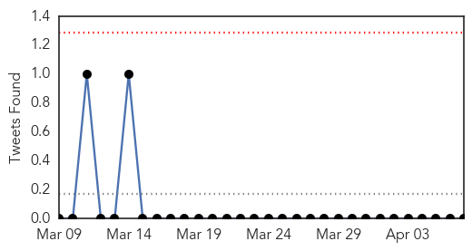
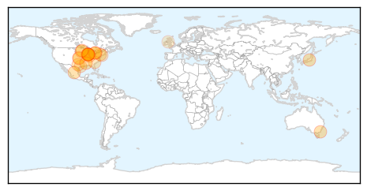
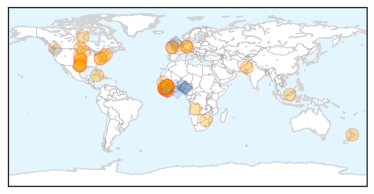

Influenza
30-Day Web Trend
3 alerts, 0 warnings

30-Day Twitter Trend
0 alerts, 0 warnings

Article Locations
Article Confidences

Top Articles:
- 0.982
- Minnesota Turkey Farms Report Bird Flu Cases
- 0.978
- ‘Women key to family health’
- 0.965
- Dog Owners Warned About Surge in Canine Flu Cases
- 0.965
- Dog Owners Warned About Surge in Canine Flu Cases
- 0.960
- E Singhbhum plans to focus on hygiene to check JE spread
- 0.940
- Wild waterfowl may be bird flu source
- 0.938
- Flu vaccinations delayed
- 0.932
- Canine flu outbreak isolated to Chicago-area
- 0.919
- In fight against avian flu, state looks for diseased birds
- 0.890
- Local dog owners encouraged to protect pets from canine flu
- 0.844
- Over 1,000 Dogs Sickened With Outbreak
- 0.834
- dog flu puts owners on alert on the north shore
- 0.826
- Bird flu spreads to Minnesota's Kandiyohi County
- 0.825
- Multi-county drill to train organizations on handling outbreak s - KLTV.com-Tyler, Longview, Jacksonville, Texas
- 0.801
- Bird Flu Confirmed on Ontario Poultry Farm
- 0.772
- Rare canine flu outbreak hits Chicago, leaving five dogs dead, sickening more than 1,000 others
- 0.751
- April 7, 2015 Archives
- 0.751
- April 6, 2015 Archives
- 0.751
- April 6, 2015 Archives
- 0.751
- April 6, 2015 Archives
- 0.751
- April 6, 2015 Archives
- 0.735
- KDA lifts poultry movement restrictions in eastern Kansas
- 0.688
- Veterinarians Warn of Near-Epidemic Dog Flu in Chicago
- 0.660
- Bird flu war intensifies
- 0.572
- Avian flu confirmed in Canada
- 0.557
- Plainfield Park District advises caution at dog parks due to canine flu
- 0.545
- Drug-resistant superbug outbreak could kill 80,000
Top Tweets:
-
No tweets found for Apr 07, 2015
Ebola
30-Day Web Trend
0 alerts, 0 warnings

30-Day Twitter Trend
0 alerts, 0 warnings
Article Locations
Article Confidences

Top Articles:
- 1.000
- 'Safety is our promise'
- 1.000
- UPDATE: U.S. Ebola Patient Fully Recovered, Leaves Hospital -
- 1.000
- 1982 study suggested Ebola was in Liberia then
- 0.999
- Is Sierra Leone Facing Ebola Outbreak Anew?
- 0.999
- Baby dies of Ebola in Sierra Leone area where outbreak started
- 0.999
- Guinea Seen As Best Hope For Preventative Drug Trials, But Time Is Running Out
- 0.999
- Persistence of Ebola Virus in Body Fluids
- 0.998
- Health Workers on Ebola Frontlines Serve Countries, Risk Own Lives
- 0.997
- Waikato nurse sees Ebola first hand
- 0.996
- Let's Care for Ebola Orphans As Much As Bentley
- 0.995
- Once an afterthought in trial planning, Guinea may provide Ebola vaccine answers
- 0.995
- Ebola: Police raid funeral and arrest 13 in Sierra Leone for organising unsafe burial
- 0.995
- Western Media Overlooks Africa Role in Fighting Ebola Disease
- 0.995
- Once an afterthought in trial planning, Guinea may provide Ebola vaccine answers
- 0.994
- Ebola: German ministers talk up economic recovery in West Africa
- 0.993
- Ebola-hit Sierra Leone arrests 13 at unsafe burial: police
- 0.993
- Ebola-hit Sierra Leone arrests 13 at unsafe burial: police - Sierra Leone
- 0.993
- Ebola-hit Sierra Leone arrests 13 at unsafe burial
- 0.992
- News Scan for Apr 06, 2015
- 0.987
- Ebola-like outbreaks to become more frequent in the future, warns UN…(They’ll Make Sure!)
- 0.986
- NIH ebola patient improving
- 0.983
- Kailahun baby was not Ebola positive – says NERC’s Palo Conteh
- 0.977
- Hunting Ebola in Freetown: A day in the life of an epidemiologist
- 0.977
- Dallas hospital seeks dismissal of nurse's suit over Ebola
- 0.975
- At Porous Liberia Border, Vigilant People Prevent Spread of Ebola
- 0.967
- I wish I could have touched Ebola patients - SA nurse
- 0.959
- Sick airline passenger taken to Hackensack University Medical Center as precaution
- 0.959
- WHO focuses on food safety
- 0.959
- Baby dies of Ebola in SLeone area where outbreak started
- 0.957
- U.S. Health Care Worker With Ebola Upgraded to Good Condition
- 0.957
- Scientist Hatches Plan to Prevent Next Disease Outbreak
- 0.951
- Courthouse News Service
- 0.932
- Minneapolis receives Ebola preparation funds
- 0.923
- Health Stakeholders Confer on Building a ‘Resilient Health System’ Post-Ebola
- 0.915
- Health crises need real-time reporting of good practice
- 0.861
- Texas Hospital Seeks Dismissal of Ebola Lawsuit
- 0.859
- SIERRA-LEONE AND THE EBOLA CRISIS.
- 0.838
- RFA Argus returns to home waters after Ebola fight
- 0.831
- Sierra Leone: Health Workers on Ebola Frontlines Serve Countries, Risk Own Lives
- 0.827
- Mary Broh Action ‘rude, disrespectful’
- 0.803
- After 3 days sit at home…Ebola will soon be defeated – NERC « Awoko Newspaper
- 0.771
- For Ebola patients, a way to see the faces of those helping
- 0.754
- ‘We must reform WHO now’, says UK chief medical officer
- 0.751
- Exclusive interview with Honourable Maya Kaikai (Final Part)
- 0.719
- Ebola aid ship Argus welcomed home to Falmouth
- 0.709
- Pakistani UN Volunteer wins Villagers’ hearts in Kambia « Awoko Newspaper
- 0.673
- Pakistani UN Volunteer Wins Villagers’ Hearts In Kambia
- 0.560
- Sierra Leone News: Kenema District records 95% compliance during 3 days sit-at-home « Awoko Newspaper
- 0.531
- Ebola survivors stand tall in Sierra Leone - Sierra Leone
- 0.516
- Ebola doctor to speak at Centenary commencement
Showing top 50 articles...
Top Tweets:
- 0.872
- RT: Prepare for more Ebola-like outbreaks UN special envoy on Ebola warns EbolaFree
- 0.867
- At Porous Liberia Border Vigilant People Prevent Spread of Ebola - Voice of America http://t.co/cBCxuOOpFe ebola EVD
- 0.837
- According to the latest figures from WHOGuinea reported 45 new Ebola cases and Sierra Leone 33. AfricaAgainstEbola
- 0.803
- At a Porous Border Vigilant People Prevent Spread of Ebola - Voice of America http://t.co/9V0BzlpSgi ebola EVD
- 0.792
- Guinea may provide Ebola vaccine answers - CTV News http://t.co/T9sBFqOTNu ebola EVD
- 0.736
- Ebola: German ministers talks up economic recovery in West Africa - Deutsche Welle http://t.co/HmId68LqQD ebola EVD
- 0.735
- Ebola death reported in Sierra Leone region where epidemic originated - SL Times http://t.co/BWvfVPuys4 EbolaNews
- 0.698
- RT: As Liberia goes18 days with no new Ebola cases SierraLeone today records three new cases in Freetown & Kambia on borde…
- 0.694
- Liberia's Early Ebola Response in Ganta Shows Resilience - Voice of America http://t.co/x1U04jPss1 ebola EVD
- 0.678
- RT: SierraLeone Ebola centre says case of the baby in Kailahun whose swab result claimed he died of the virus "was a mistake…
- 0.653
- Ebola-hit Sierra Leone arrests 13 at unsafe burial: police - Yahoo News http://t.co/A3fzOPL1uw ebola EVD
- 0.640
- In Guinea as of April 1: 57 confirmed cases of Ebola (up from last week); geographical area of transmission also increased via
- 0.639
- Ebola doctor to speak at Centenary commencement - Shreveport Times http://t.co/IEN3OYCz86 ebola EVD
- 0.624
- Ebola Vaccine 2015: Guinea Seen As Best Hope For Preventative Drug Trials ... - International Busi... http://t.co/M0QJSaJYFh ebola EVD
- 0.569
- LISTEN: Sidie is 1 of nearly 900 health workers infected during the Ebola oubtreak EbolaResponse https://t.co/wb6Zf1uawi
- 0.568
- Ebola: media 'overlooked Africa's role in combating crisis' - The Guardian http://t.co/j5RI5PtIxB ebola EVD
- 0.565
- Charlotte Ebola Survivor Returns to Liberia - TWC News http://t.co/ZMjhTNGTap ebola EVD
- 0.548
- Why Do Sierra Leonean and American Clinicians With Ebola Get Such Different ... - Slate Magazine http://t.co/C21X7JqM9O ebola EVD
- 0.504
- RT: Register for our webinar series on training health workers for Ebola with and http:/…